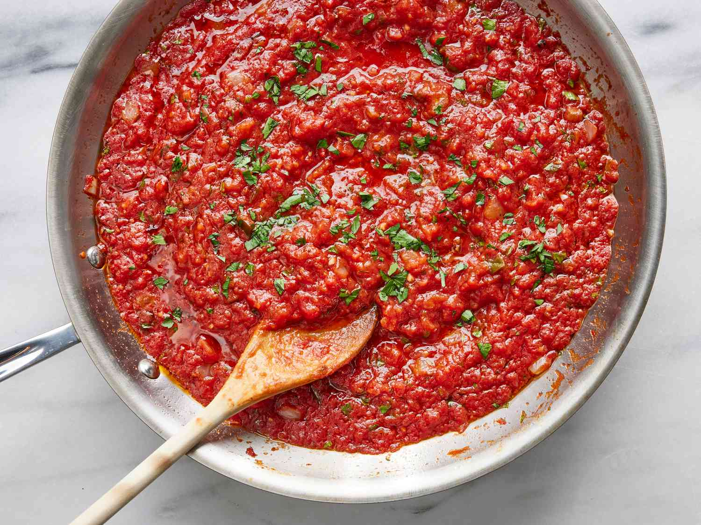

Best Marinara Sauce

Description
This marinara sauce recipe is very easy to make and the only red sauce my 5-year-old daughter will eat!
This marinara sauce with fresh tomatoes is rich and flavorful. Great for use in pasta, lasagna, and other casseroles. A great recipe for using up extra-ripe
tomatoes from your garden!
Ingredients
- 2 (14.5 ounce) cans stewed tomatoes
- 1 (6 ounce) can tomato paste
- 4 tablespoons chopped fresh parsley
- 1 clove garlic, minced
- 1 teaspoon dried oregano
- 1 teaspoon salt
- 1/4 teaspoon ground black pepper
- 6 tablespoons olive oil
- 1/3 cup finely diced onion
- 1/2 cup white wine
Steps
- Place tomatoes, tomato paste, parsley, garlic, oregano, salt, and pepper in a food processor; blend until smooth.
- Heat oil in a large skillet over medium heat. Add onion and cook until slightly softened, about 2 minutes.
- Stir in blended tomato sauce and white wine.
- Simmer, stirring occasionally, until thickened, about 30 minutes.